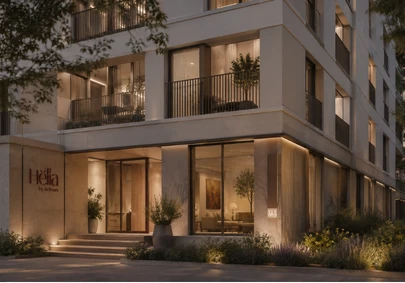
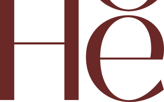

Hëlia
Hëlia
Una marca residencial con la calidez de la hora dorada: un logotipo sereno, una diéresis como guiño y una paleta de burdeos y crema.
A residential brand with the warmth of golden hour: a serene logotype, a diaeresis as a wink and a palette of burgundy and cream.



Una marca que se queda con la luz.
A brand that holds on to the light.
Logotipo de trazo limpio con una diéresis como guiño, un isotipo compacto que funciona solo y dos versiones, clara y oscura, para cualquier fondo.
A clean-lined logotype with a diaeresis as a wink, a compact monogram that works on its own and two versions, light and dark, for any background.
- Logotipo
- Logotype
- Isotipo
- Monogram
- Versión clara y versión oscura
- Light and dark versions
- Paleta burdeos y crema
- Burgundy and cream palette
Una entrada que invita a pasar.
An entrance that invites you in.
El logotipo se integra en la arquitectura: un rótulo sobre la piedra, luz cálida y un portal que invita a entrar.
The logotype blends into the architecture: a sign on the stone, warm light and a doorway that invites you in.
- Rótulo de entrada
- Entrance sign
- Versión clara sobre fondo oscuro
- Light version on a dark background